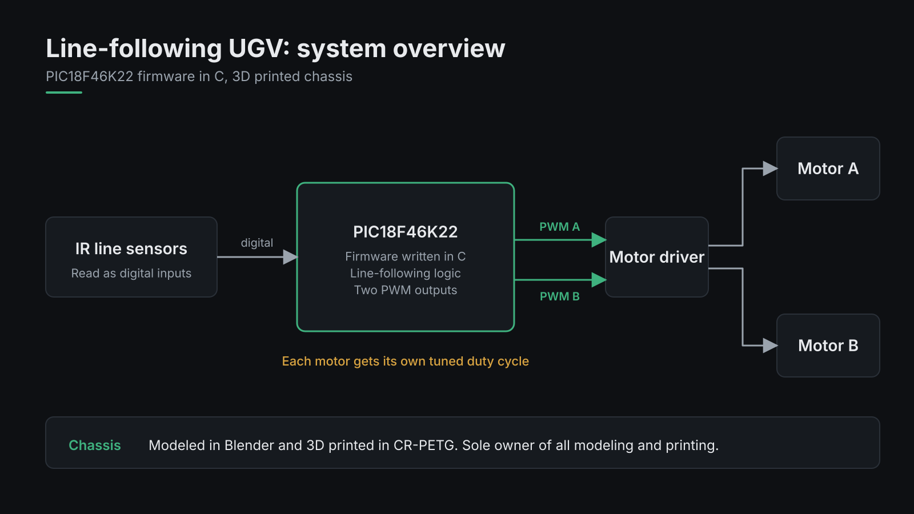
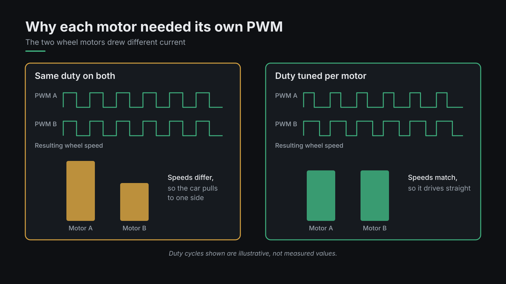
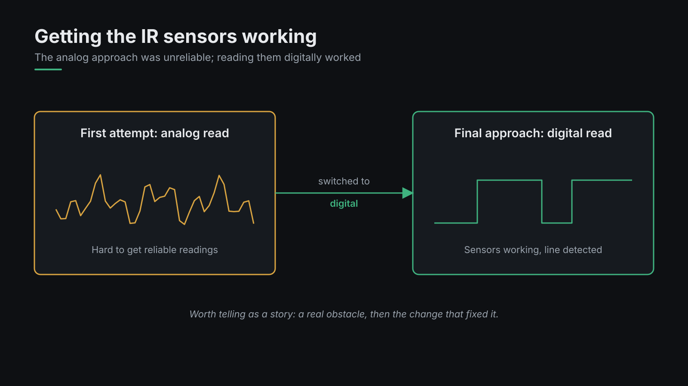
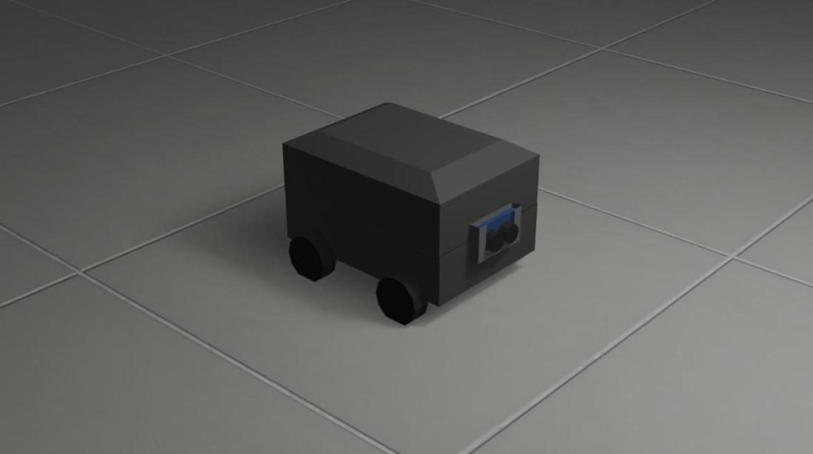
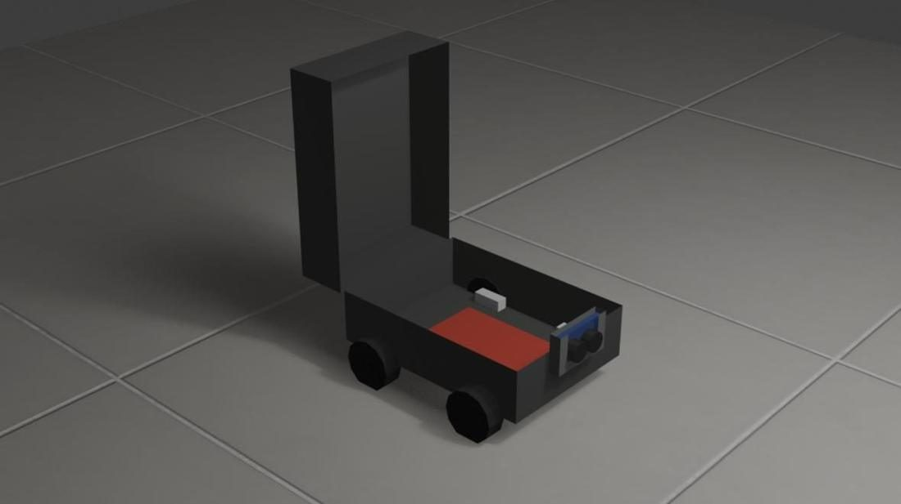
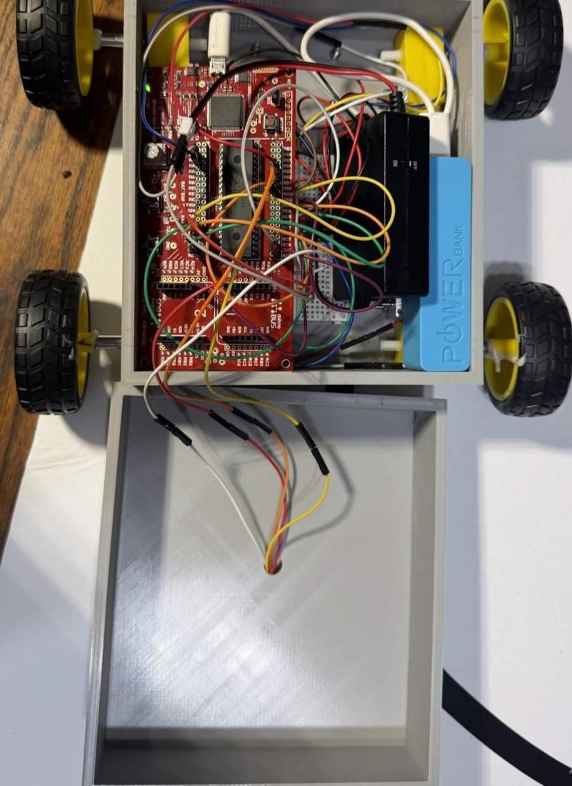
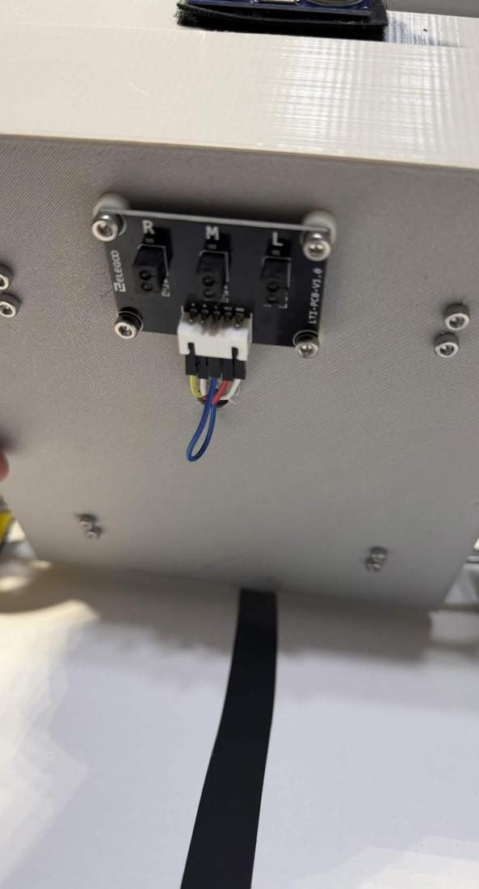

// embedded firmware · mechanical design
Line-Following UGV
A small ground vehicle that follows a black line and stops for obstacles. Register-level C on a PIC18F46K22, three IR line sensors, an ultrasonic rangefinder, and a chassis I modeled and 3D printed myself.


What I built
The firmware sets up the chip at the register level: the internal 16 MHz oscillator, two hardware PWM channels for the wheel motors, GPIO for motor direction, and Timer1 as a 1 µs counter for the ultrasonic sensor.
Every 25 ms the main loop checks distance first. If anything is within 5 inches, the car stops. Otherwise it reads the three line sensors and picks a steering move.
I did all of the 3D work for the team: I modeled the chassis in Blender and printed it in PETG, with mounts for the board, motors, and sensors.
Steering logic
Each IR sensor reads 1 on black and 0 on white, and the 3-bit pattern decides how hard to turn. The car remembers which side it last saw the line on, so when it loses the line it turns back toward it instead of driving off.
Problems we hit


Motors that didn't match
The two wheel motors drew different amounts of current, so the same PWM signal spun them at different speeds and the car drifted. I tuned a separate duty cycle for each motor until they matched.
#define BASE_SPEED_LEFT 55 #define BASE_SPEED_RIGHT 58
Unreliable IR sensors
Reading the line sensors as analog values gave inconsistent results. We switched to reading them as digital inputs, which made line detection reliable.
Obstacle stop
The HC-SR04 gets a 10 µs trigger pulse, and Timer1 measures how long the echo stays high. Both waits have a timeout, so a missed echo can't freeze the car.
From render to print



